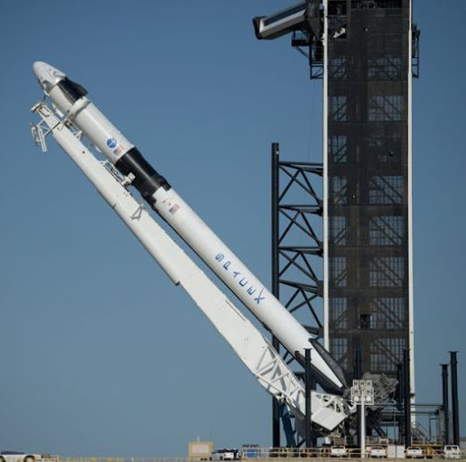
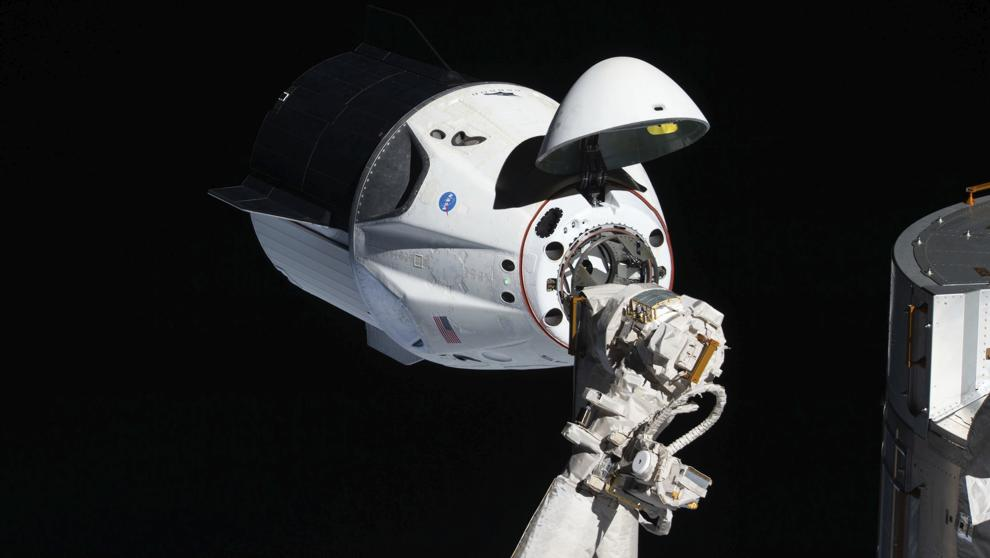

Característiques de la càpsula Dragon
Dragon és capaç de portar fins un total de 7 passatgers, enguany les missions de la NASA solament porten 4 astronautes.És impulsat per un Falcon 9 a l'hora d'abandonar la terra i té una massa d'uns 6000 Kg, massa que disminueix fins als 3000 Kg a l'hora de l'amaratge.La càpsula té una altura de 8 metres i un diàmetre de 4 metres.

Característiques del Falcon 9
Falcon 9 és el primer coet que és capaç de volar més d'un cop, és per això que la tasca de fer-ho més econòmic ha pogut ser possible, ja que aquest coet, una vegada ha deixat la càrrega a l'orbita, és capaç de tornar i aterrar, llest per ser utilitzat un altre vegada.Té una altura de 70 metres i un diàmetre de 3.7 metres.Falcon 9 té una massa de 549054 Kg i necessitaria únicament 4020 Kg de càrrega útil per arribar a Mart.
Càpsula Dragon + Falcon 9
La unió de la càpsula Dragon i el coet Falcon 9 fa que tot funcioni com ho ha de fer. La càpsula es col·loca a la part superior de Falcon 9 i aquest porta a la càpsula fins a l'orbita desitjada. Desprès d'això, Falcon 9 es va desacoblar de la càpsula Dragon i va amarar a la embarcació anomenada "Of course I still love u". Mentre tant, Dragon va continuar fins a acoblar-se a l'EEI, on els nostres astronautes van trobar-se amb els seus companys.
